Vamos a resolver una serie de ejercicios de gráficos de variables numéricas. Para esto, vamos a hacer uso de la base de datos boost_inmuno.dta. Esta es una base de datos simulada y modificada para los fines de este ejercicio, la cual se basa en el estudio Immunogenicity and reactogenicity of a third dose of BNT162b2 vaccine for COVID-19 after a primary regimen with BBIBP-CorV or BNT162b2 vaccines in Lima, Peru pre-publicado en MedRxiv en 2022 y en revisión por pares por la revista Plos Medicine. El estudio detallado puede leerse en el artículo original el cual se encuentra en este enlace web.
Este fue un estudio observacional exploratorio que evaluó la reactogenicidad e inmunogenicidad de la tercera dosis en persona de salud y adultos mayores. Ambos grupos recibieron como tercera dosis la vacuna BNT162b2 (Pfizer); sin embargo, hubo diferencias en cuanto al esquema primario producto de cómo el esquema de vacunación nacional fue realizado. El personal de salud había recibido como esquema primario la vacuna BBIBP-CorV (Sinopharm) y los adultos mayores recibieron mayoritariamente BNT162b2 (Pfizer), por lo que tuvimos un grupo de vacunación heteróloga (BBIBP-CorV + BNT162b2) y otro de vacunación homóloga (SOlo BNT162b2) en los cuales evaluar la inmunogenicidad y reactogenicidad.
Cargar paquetes
Código
library(tidyverse) # Esto carga {dplyr}, {ggplot2}, etc.
`stat_bin()` using `bins = 30`. Pick better value with `binwidth`.
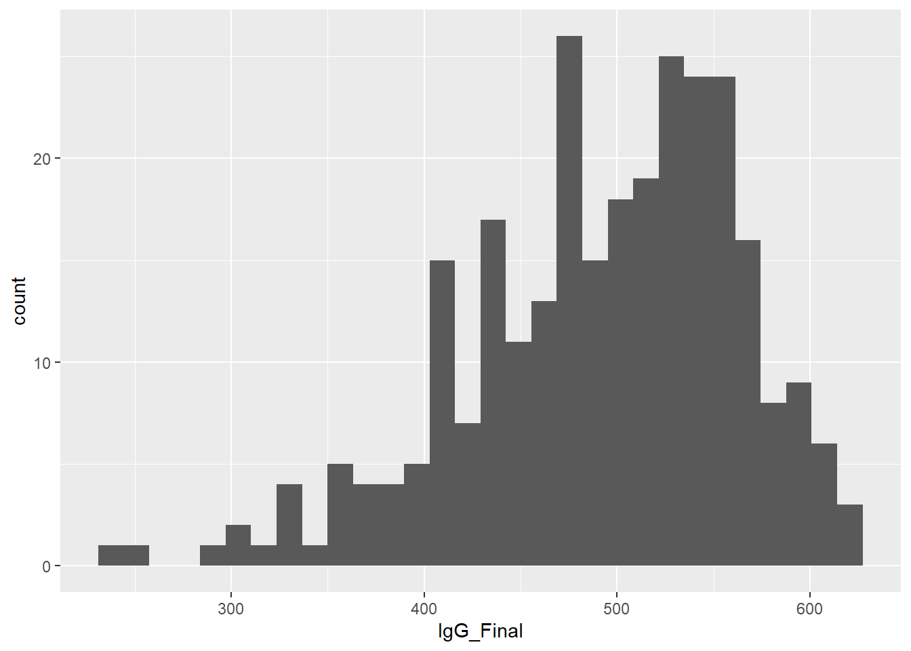
Grafique un histograma de frecuencias para la variable Inmunoglobulina Final y configure 3 binwidth diferentes: 5, 10 y 100. Imprimalos pero no los guarde.
Personalice el histograma de frecuencias con binwidth de 5. Etiquete el eje de abcisas como “IgG al final del estudio”, el eje de ordenadas como “Frecuencia absoluta” y coloque un título que diga “Distribución de la IgG al final del estudio”.
Código
bd_inmuno %>%ggplot(aes(x = IgG_Final)) +geom_histogram(binwidth =5) +labs(x ="IgG al final del estudio", y ="Frecuencia absoluta", title ="Distribución de la IgG al final del estudio")
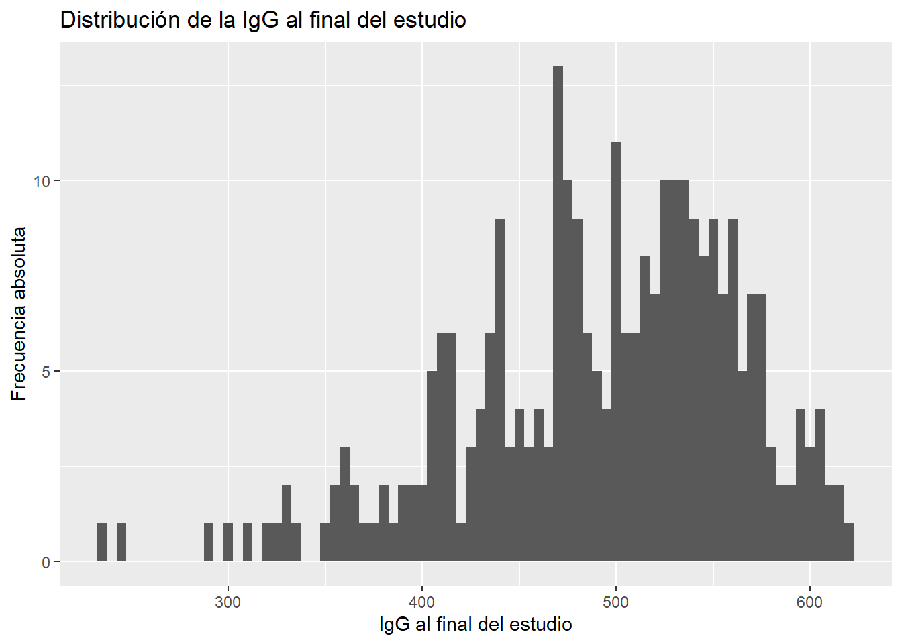
Configure los temas del gráfico anterio:
Tema theme_light():
Código
bd_inmuno %>%ggplot(aes(x = IgG_Final)) +geom_histogram(binwidth =5) +labs(x ="IgG al final del estudio", y ="Frecuencia absoluta", title ="Distribución de la IgG al final del estudio") +theme_light()
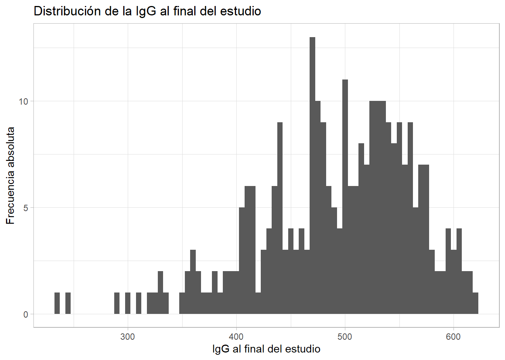
Tema theme_dark()
Código
bd_inmuno %>%ggplot(aes(x = IgG_Final)) +geom_histogram(binwidth =5) +labs(x ="IgG al final del estudio", y ="Frecuencia absoluta", title ="Distribución de la IgG al final del estudio") +theme_dark()
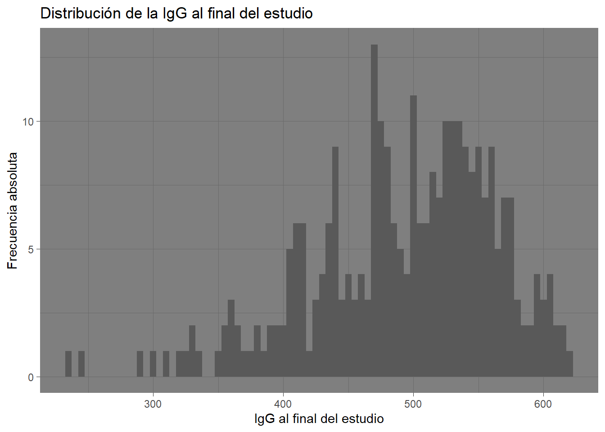
Histograma de densidades
Hacemos uso de la geometría geom_histogram() con la configuración ..density.. dentro de aes().
Grafique un histograma de densidades para la variable Inmunoglobulina Final y configure 3 binwidth diferentes: 10, 50 y 100. Guarde cada gráfico como g10, g50 y g100. Imprima cada gráfico.
Personalice el histograma de densidades con binwidth de 50. Etiquete el eje de abcisas como “IgG al final del estudio”, el eje de ordenadas como “Densidad” y colo un título que diga “Distribución de la IgG al final del estudio”.
Código
# binwidth = 50bd_inmuno %>%ggplot(aes(x = IgG_Final)) +geom_histogram(aes(y = ..density..), binwidth =50) +labs(x ="IgG al final del estudio", y ="Densidad", title ="Distribución de la IgG al final del estudio")
Configure los temas del gráfico anterior:
Tema theme_light():
Código
# binwidth = 50bd_inmuno %>%ggplot(aes(x = IgG_Final)) +geom_histogram(aes(y = ..density..), binwidth =50) +labs(x ="IgG al final del estudio", y ="Densidad", title ="Distribución de la IgG al final del estudio") +theme_light()
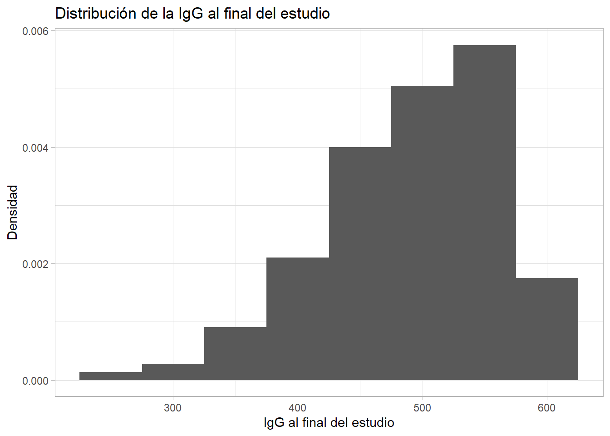
Tema theme_dark()
Código
# binwidth = 50bd_inmuno %>%ggplot(aes(x = IgG_Final)) +geom_histogram(aes(y = ..density..), binwidth =50) +labs(x ="IgG al final del estudio", y ="Densidad", title ="Distribución de la IgG al final del estudio") +theme_dark()
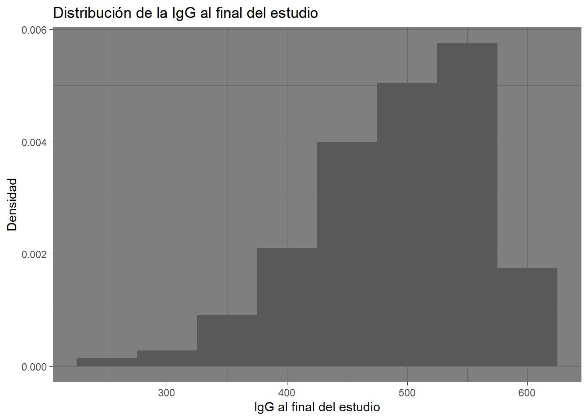
Extra bonus:
Cambie el color del área histograma a “skyblue”: Tip: Usar fill (color del área)
Código
bd_inmuno %>%ggplot(aes(x = IgG_Final)) +geom_histogram(aes(y = ..density..), binwidth =50, fill ="skyblue") +labs(x ="IgG al final del estudio", y ="Densidad", title ="Distribución de la IgG al final del estudio") +theme_light()
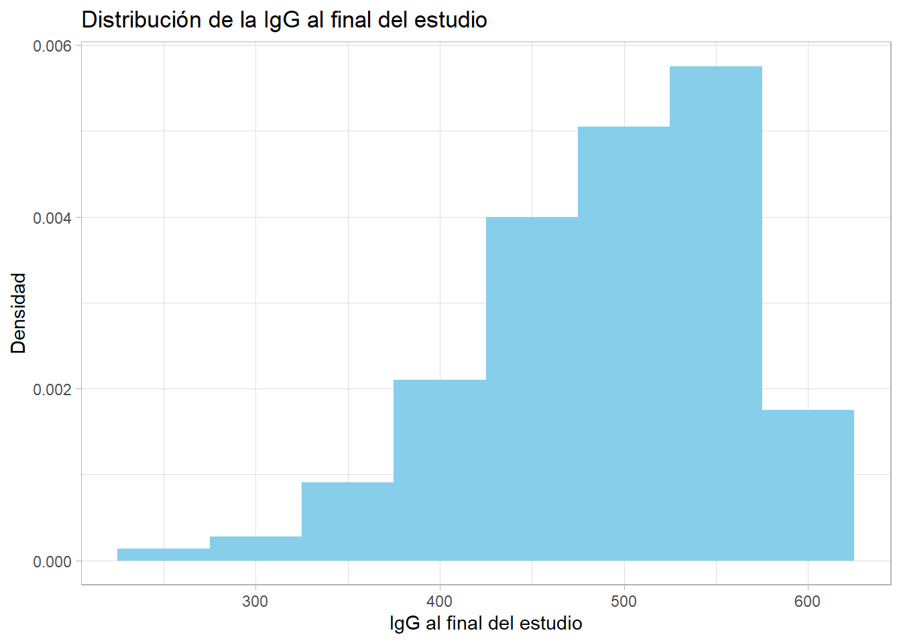
Prueba dos niveles de transparencia configurando los alfa como 0.5 y 0.1:
Con alfa de 0.5
Código
bd_inmuno %>%ggplot(aes(x = IgG_Final)) +geom_histogram(aes(y = ..density..), binwidth =50, fill ="skyblue", alpha =0.5) +labs(x ="IgG al final del estudio", y ="Densidad", title ="Distribución de la IgG al final del estudio") +theme_light()
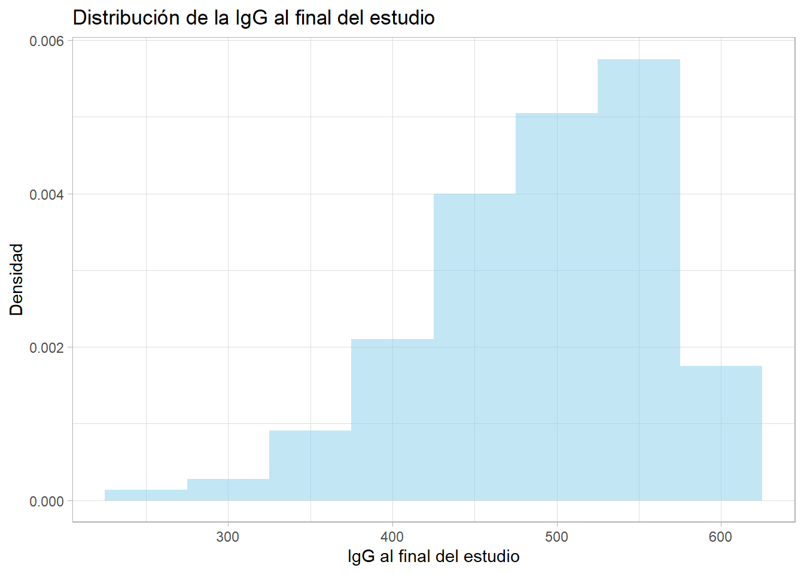
Con alfa de 0.1
Código
bd_inmuno %>%ggplot(aes(x = IgG_Final)) +geom_histogram(aes(y = ..density..), binwidth =50, fill ="skyblue", alpha =0.1) +labs(x ="IgG al final del estudio", y ="Densidad", title ="Distribución de la IgG al final del estudio") +theme_light()
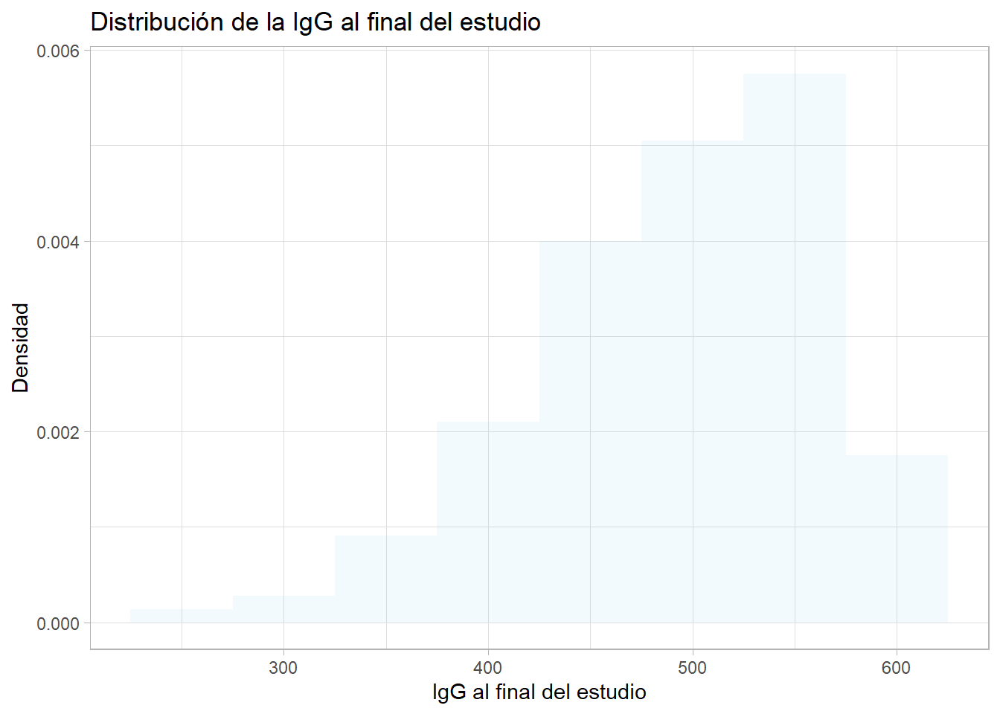
Cambie el color de las líneas del histograma a “black”: Tip: Usar color (color del área)
Código
bd_inmuno %>%ggplot(aes(x = IgG_Final)) +geom_histogram(aes(y = ..density..), binwidth =50, fill ="skyblue", alpha =0.5, color ="black") +labs(x ="IgG al final del estudio", y ="Densidad", title ="Distribución de la IgG al final del estudio") +theme_light()
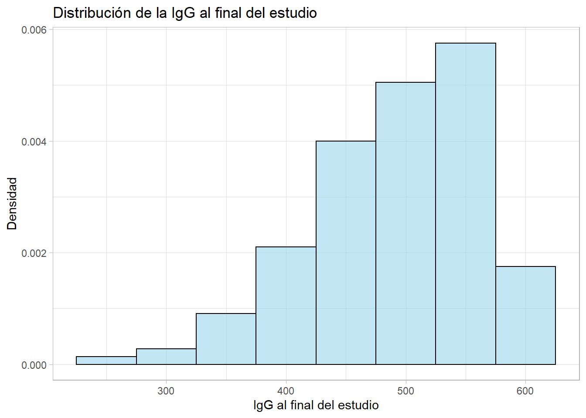
Gráficos de densidad
Hacemos uso de la geometría geom_density().
Grafique un gráfico de densidades kernel para la variable Inmunoglobulina Final y configure los parámetros de suavización: 0.1, 0.5 y 2. Guarde cada gráfico como p0.1, p0.5 y p2. Imprima cada gráfico.
Personalice el gráfico de densidades con adjust de 0.5. Etiquete el eje de abcisas como “IgG al final del estudio”, el eje de ordenadas como “Densidad” y colo un título que diga “Distribución de la IgG al final del estudio”.
Código
bd_inmuno %>%ggplot(aes(x = IgG_Final)) +geom_density() +labs(x ="IgG al final del estudio", y ="Densidad", title ="Distribución de la IgG al final del estudio")
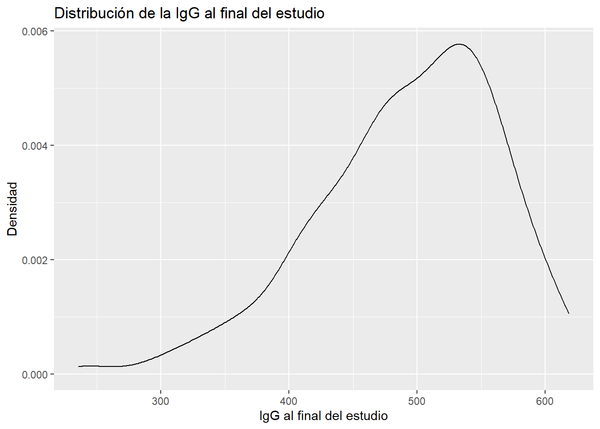
Configure los temas del gráfico anterior:
Tema theme_classic():
Código
bd_inmuno %>%ggplot(aes(x = IgG_Final)) +geom_density() +labs(x ="IgG al final del estudio", y ="Densidad", title ="Distribución de la IgG al final del estudio") +theme_classic()
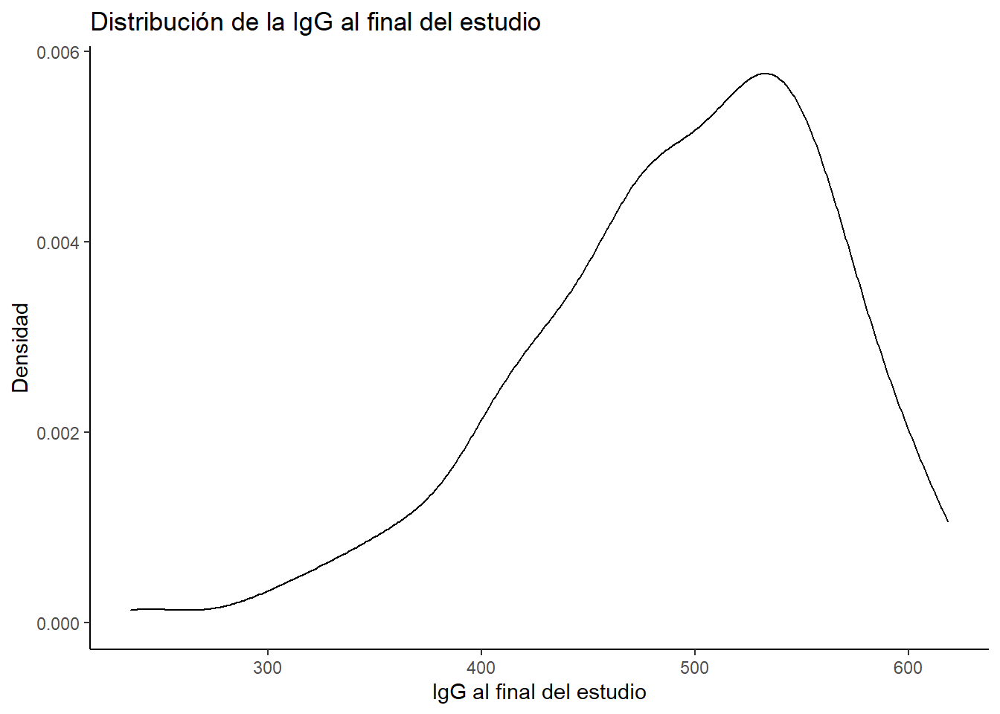
Tema theme_linedraw()
Código
bd_inmuno %>%ggplot(aes(x = IgG_Final)) +geom_density() +labs(x ="IgG al final del estudio", y ="Densidad", title ="Distribución de la IgG al final del estudio") +theme_linedraw()
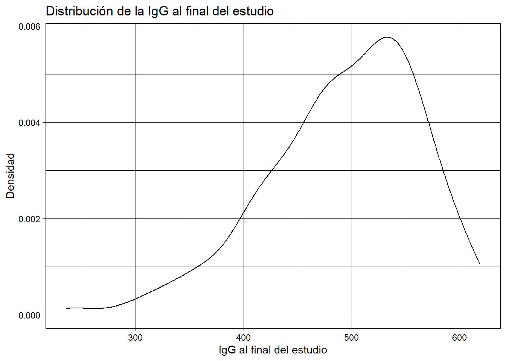
Extra bonus:
Cambie el color del área del gráfico a “green”: Tip: fill
Código
bd_inmuno %>%ggplot(aes(x = IgG_Final)) +geom_density(fill ="green") +labs(x ="IgG al final del estudio", y ="Densidad", title ="Distribución de la IgG al final del estudio") +theme_classic()
Prueba dos niveles de transparencia configurando los alfa como 0.2 y 0.8:
alfa 0.2
Código
bd_inmuno %>%ggplot(aes(x = IgG_Final)) +geom_density(fill ="green", alpha =0.2) +labs(x ="IgG al final del estudio", y ="Densidad", title ="Distribución de la IgG al final del estudio") +theme_classic()
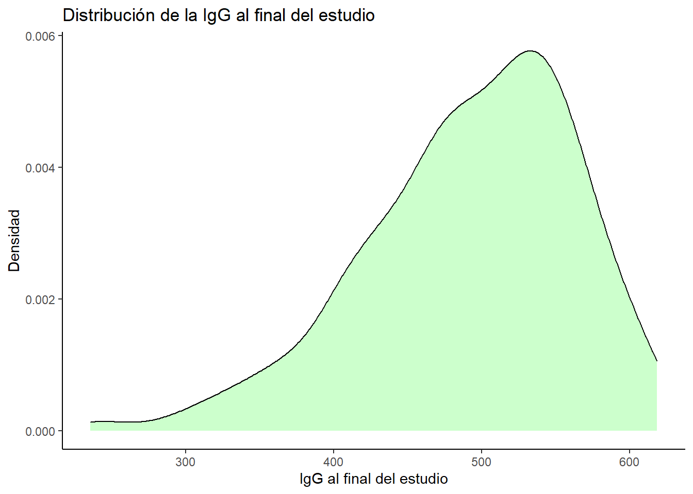
alfa 0.8
Código
bd_inmuno %>%ggplot(aes(x = IgG_Final)) +geom_density(fill ="green", alpha =0.8) +labs(x ="IgG al final del estudio", y ="Densidad", title ="Distribución de la IgG al final del estudio") +theme_classic()
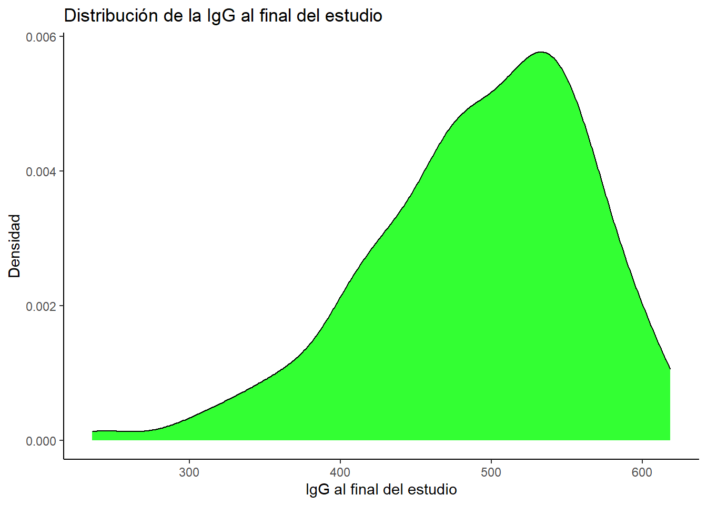
Cambie el color de las líneas del gráfico a “orange”:
Código
bd_inmuno %>%ggplot(aes(x = IgG_Final)) +geom_density(fill ="green", alpha =0.2, color ="orange") +labs(x ="IgG al final del estudio", y ="Densidad", title ="Distribución de la IgG al final del estudio") +theme_classic()
bd_inmuno %>%ggplot(aes(y = IgG_Final)) +geom_boxplot(fill ="skyblue", alpha =0.1, color ="blue") +labs(x ="", y ="Ig G Final", title ="Gráfico de cajas") +theme_minimal() +theme(axis.text.x =element_blank())
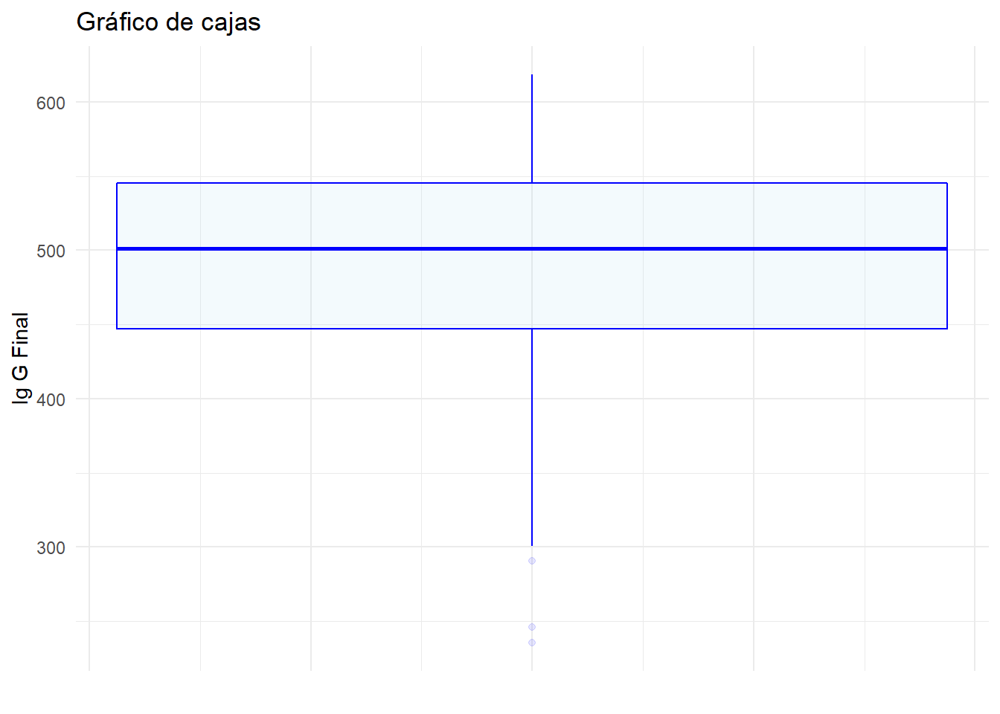
Gráfico de violin
Hacemos uso de la geometría geom_violin().
Vertical
Código
bd_inmuno %>%ggplot(aes(x =1, y = IgG_Final)) +geom_violin()
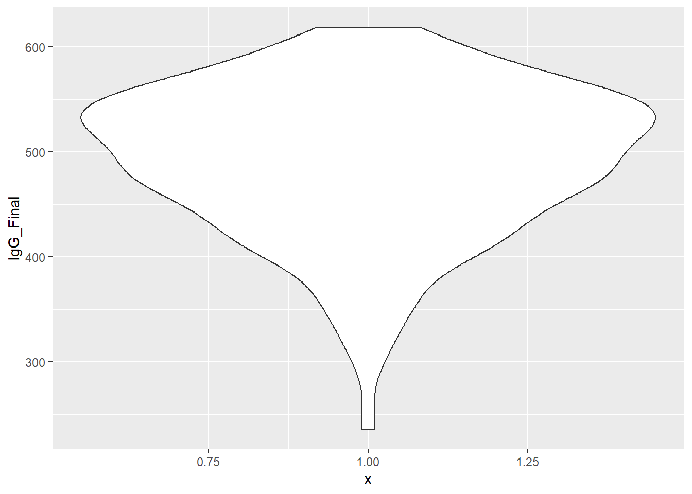
Horizontal
Código
bd_inmuno %>%ggplot(aes(y =1, x = IgG_Final)) +geom_violin()
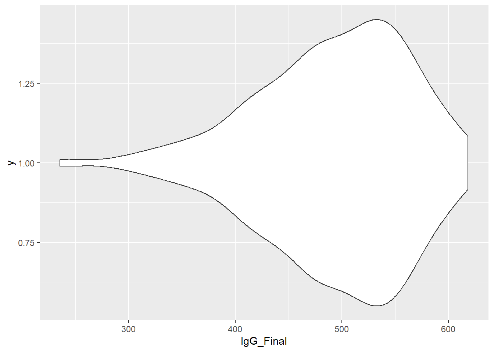
Personalizar agregando etiquetas y temas
Código
bd_inmuno %>%ggplot(aes(x =1, y = IgG_Final)) +geom_violin(fill ="skyblue", alpha =0.1, color ="blue") +labs(x ="", y ="Ig G Final", title ="Gráfico de violín") +theme_minimal() +theme(axis.text.x =element_blank())
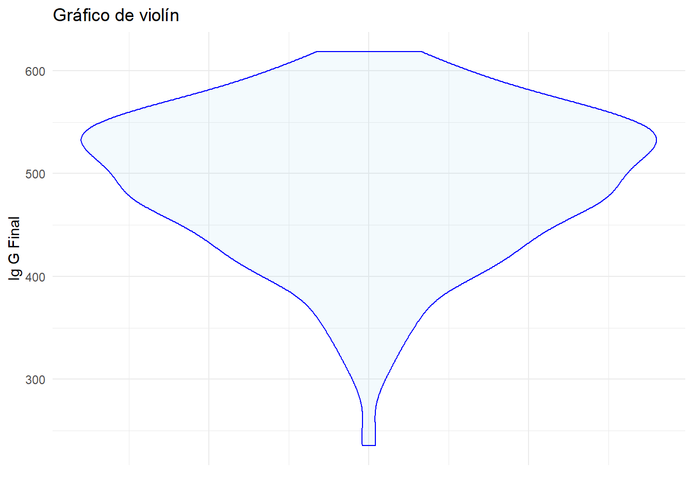
Combinación de gráficos
Combinamos geometrías a través de capas unidas con el símbolo +.
Gráfico de violin + caja + punto
Código
bd_inmuno %>%ggplot(aes(x =1, y = IgG_Final)) +geom_violin() +geom_boxplot(width =0.5, outlier.color ="white") +geom_jitter(color ="skyblue") +theme_minimal() +labs(x ="", y ="Ig G basal (AU/ mL)") +theme(axis.text.x =element_blank())
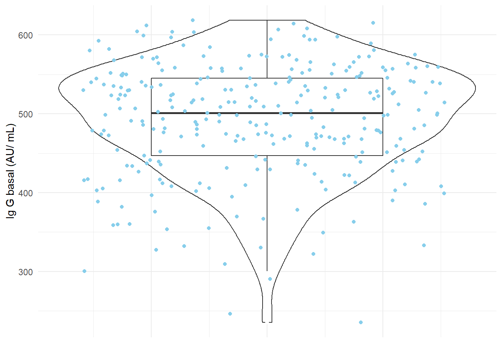
Correr el código
---title: "Taller: Gráfico de variables numéricas"author: "Percy Soto-Becerra"---## IntroducciónVamos a resolver una serie de ejercicios de gráficos de variables numéricas. Para esto, vamos a hacer uso de la base de datos `boost_inmuno.dta`. Esta es una base de datos simulada y modificada para los fines de este ejercicio, la cual se basa en el estudio **Immunogenicity and reactogenicity of a third dose of BNT162b2 vaccine for COVID-19 after a primary regimen with BBIBP-CorV or BNT162b2 vaccines in Lima, Peru** pre-publicado en **MedRxiv** en 2022 y en revisión por pares por la revista Plos Medicine. El estudio detallado puede leerse en el artículo original el cual se encuentra en este [enlace web](https://www.medrxiv.org/content/10.1101/2022.05.01.22274548v1). Este fue un estudio observacional exploratorio que evaluó la **reactogenicidad** e **inmunogenicidad** de la tercera dosis en persona de salud y adultos mayores. Ambos grupos recibieron como tercera dosis la vacuna **BNT162b2 (Pfizer)**; sin embargo, hubo diferencias en cuanto al esquema primario producto de cómo el esquema de vacunación nacional fue realizado. El personal de salud había recibido como esquema primario la vacuna **BBIBP-CorV (Sinopharm)** y los adultos mayores recibieron mayoritariamente **BNT162b2 (Pfizer)**, por lo que tuvimos un grupo de **vacunación heteróloga** (BBIBP-CorV + BNT162b2) y otro de **vacunación homóloga** (SOlo BNT162b2) en los cuales evaluar la inmunogenicidad y reactogenicidad.## Cargar paquetes```{r}library(tidyverse) # Esto carga {dplyr}, {ggplot2}, etc.library(haven) # Para importar datos de Statalibrary(skimr) # Exploración de datos```## Importar Datos```{r}bd_inmuno <-read_stata("boost_inmuno.dta") %>%as_factor()```## Análisis Inicial de Datos: Inspección```{r}bd_inmuno %>%glimpse()``````{r}bd_inmuno %>%skim()```## Histograma de frecuenciasHacemos uso de la geometría `geom_histogram()`.- Grafique un histograma de frecuencias para la variable Inmunoglobulina Final. Imprimalo pero no lo guarde.```{r}bd_inmuno %>%ggplot(aes(x = IgG_Final)) +geom_histogram()```- Grafique un histograma de frecuencias para la variable Inmunoglobulina Final y configure 3 `binwidth` diferentes: 5, 10 y 100. Imprimalos pero no los guarde.```{r}# binwidth = 5bd_inmuno %>%ggplot(aes(x = IgG_Final)) +geom_histogram(binwidth =5)``````{r}# binwidth = 10bd_inmuno %>%ggplot(aes(x = IgG_Final)) +geom_histogram(binwidth =10)``````{r}# binwidth = 100bd_inmuno %>%ggplot(aes(x = IgG_Final)) +geom_histogram(binwidth =100)```- Personalice el histograma de frecuencias con `binwidth` de 5. Etiquete el eje de abcisas como "IgG al final del estudio", el eje de ordenadas como "Frecuencia absoluta" y coloque un título que diga "Distribución de la IgG al final del estudio".```{r}bd_inmuno %>%ggplot(aes(x = IgG_Final)) +geom_histogram(binwidth =5) +labs(x ="IgG al final del estudio", y ="Frecuencia absoluta", title ="Distribución de la IgG al final del estudio")```- Configure los temas del gráfico anterio:Tema `theme_light()`:```{r}bd_inmuno %>%ggplot(aes(x = IgG_Final)) +geom_histogram(binwidth =5) +labs(x ="IgG al final del estudio", y ="Frecuencia absoluta", title ="Distribución de la IgG al final del estudio") +theme_light()```Tema `theme_dark()````{r}bd_inmuno %>%ggplot(aes(x = IgG_Final)) +geom_histogram(binwidth =5) +labs(x ="IgG al final del estudio", y ="Frecuencia absoluta", title ="Distribución de la IgG al final del estudio") +theme_dark()```## Histograma de densidadesHacemos uso de la geometría `geom_histogram()` con la configuración `..density..` dentro de `aes()`.- Grafique un histograma de densidades para la variable Inmunoglobulina Final y configure 3 `binwidth` diferentes: 10, 50 y 100. Guarde cada gráfico como g10, g50 y g100. Imprima cada gráfico.```{r}# binwidth = 10bd_inmuno %>%ggplot(aes(x = IgG_Final)) +geom_histogram(aes(y = ..density..), binwidth =10)``````{r}# binwidth = 50bd_inmuno %>%ggplot(aes(x = IgG_Final)) +geom_histogram(aes(y = ..density..), binwidth =50)``````{r}# binwidth = 100bd_inmuno %>%ggplot(aes(x = IgG_Final)) +geom_histogram(aes(y = ..density..), binwidth =100)```- Personalice el histograma de densidades con `binwidth` de 50. Etiquete el eje de abcisas como "IgG al final del estudio", el eje de ordenadas como "Densidad" y colo un título que diga "Distribución de la IgG al final del estudio".```{r}# binwidth = 50bd_inmuno %>%ggplot(aes(x = IgG_Final)) +geom_histogram(aes(y = ..density..), binwidth =50) +labs(x ="IgG al final del estudio", y ="Densidad", title ="Distribución de la IgG al final del estudio")```- Configure los temas del gráfico anterior:Tema `theme_light()`:```{r}# binwidth = 50bd_inmuno %>%ggplot(aes(x = IgG_Final)) +geom_histogram(aes(y = ..density..), binwidth =50) +labs(x ="IgG al final del estudio", y ="Densidad", title ="Distribución de la IgG al final del estudio") +theme_light()```Tema `theme_dark()````{r}# binwidth = 50bd_inmuno %>%ggplot(aes(x = IgG_Final)) +geom_histogram(aes(y = ..density..), binwidth =50) +labs(x ="IgG al final del estudio", y ="Densidad", title ="Distribución de la IgG al final del estudio") +theme_dark()```- Extra bonus: Cambie el color del área histograma a "skyblue": *Tip: Usar fill (color del área)*```{r}bd_inmuno %>%ggplot(aes(x = IgG_Final)) +geom_histogram(aes(y = ..density..), binwidth =50, fill ="skyblue") +labs(x ="IgG al final del estudio", y ="Densidad", title ="Distribución de la IgG al final del estudio") +theme_light()```Prueba dos niveles de transparencia configurando los alfa como 0.5 y 0.1:*Con alfa de 0.5*```{r}bd_inmuno %>%ggplot(aes(x = IgG_Final)) +geom_histogram(aes(y = ..density..), binwidth =50, fill ="skyblue", alpha =0.5) +labs(x ="IgG al final del estudio", y ="Densidad", title ="Distribución de la IgG al final del estudio") +theme_light()```*Con alfa de 0.1*```{r}bd_inmuno %>%ggplot(aes(x = IgG_Final)) +geom_histogram(aes(y = ..density..), binwidth =50, fill ="skyblue", alpha =0.1) +labs(x ="IgG al final del estudio", y ="Densidad", title ="Distribución de la IgG al final del estudio") +theme_light()```Cambie el color de las líneas del histograma a "black":*Tip: Usar color (color del área)*```{r}bd_inmuno %>%ggplot(aes(x = IgG_Final)) +geom_histogram(aes(y = ..density..), binwidth =50, fill ="skyblue", alpha =0.5, color ="black") +labs(x ="IgG al final del estudio", y ="Densidad", title ="Distribución de la IgG al final del estudio") +theme_light()```## Gráficos de densidadHacemos uso de la geometría `geom_density()`.- Grafique un gráfico de densidades kernel para la variable Inmunoglobulina Final y configure los parámetros de suavización: 0.1, 0.5 y 2. Guarde cada gráfico como p0.1, p0.5 y p2. Imprima cada gráfico.```{r}# adjust = 0.1bd_inmuno %>%ggplot(aes(x = IgG_Final)) +geom_density(adjust =0.1)``````{r}# adjust = 0.5bd_inmuno %>%ggplot(aes(x = IgG_Final)) +geom_density(adjust =0.5)``````{r}# adjust = 2bd_inmuno %>%ggplot(aes(x = IgG_Final)) +geom_density(adjust =2)```- Personalice el gráfico de densidades con `adjust` de 0.5. Etiquete el eje de abcisas como "IgG al final del estudio", el eje de ordenadas como "Densidad" y colo un título que diga "Distribución de la IgG al final del estudio".```{r}bd_inmuno %>%ggplot(aes(x = IgG_Final)) +geom_density() +labs(x ="IgG al final del estudio", y ="Densidad", title ="Distribución de la IgG al final del estudio") ```- Configure los temas del gráfico anterior:Tema `theme_classic()`:```{r}bd_inmuno %>%ggplot(aes(x = IgG_Final)) +geom_density() +labs(x ="IgG al final del estudio", y ="Densidad", title ="Distribución de la IgG al final del estudio") +theme_classic()```Tema `theme_linedraw()````{r}bd_inmuno %>%ggplot(aes(x = IgG_Final)) +geom_density() +labs(x ="IgG al final del estudio", y ="Densidad", title ="Distribución de la IgG al final del estudio") +theme_linedraw()```- Extra bonus: Cambie el color del área del gráfico a "green":Tip: fill```{r}bd_inmuno %>%ggplot(aes(x = IgG_Final)) +geom_density(fill ="green") +labs(x ="IgG al final del estudio", y ="Densidad", title ="Distribución de la IgG al final del estudio") +theme_classic()```Prueba dos niveles de transparencia configurando los alfa como 0.2 y 0.8:alfa 0.2```{r}bd_inmuno %>%ggplot(aes(x = IgG_Final)) +geom_density(fill ="green", alpha =0.2) +labs(x ="IgG al final del estudio", y ="Densidad", title ="Distribución de la IgG al final del estudio") +theme_classic()```alfa 0.8```{r}bd_inmuno %>%ggplot(aes(x = IgG_Final)) +geom_density(fill ="green", alpha =0.8) +labs(x ="IgG al final del estudio", y ="Densidad", title ="Distribución de la IgG al final del estudio") +theme_classic()```Cambie el color de las líneas del gráfico a "orange":```{r}bd_inmuno %>%ggplot(aes(x = IgG_Final)) +geom_density(fill ="green", alpha =0.2, color ="orange") +labs(x ="IgG al final del estudio", y ="Densidad", title ="Distribución de la IgG al final del estudio") +theme_classic()```## Gráfico de cajasHacemos uso de la geometría `geom_boxplot()`.*Horizontal*```{r}bd_inmuno %>%ggplot(aes(x = IgG_Final)) +geom_boxplot() ```*Vertical*```{r}bd_inmuno %>%ggplot(aes(y = IgG_Final)) +geom_boxplot() ```- Personalizar agregando etiquetas y temas```{r}bd_inmuno %>%ggplot(aes(y = IgG_Final)) +geom_boxplot(fill ="skyblue", alpha =0.1, color ="blue") +labs(x ="", y ="Ig G Final", title ="Gráfico de cajas") +theme_minimal() +theme(axis.text.x =element_blank())```## Gráfico de violinHacemos uso de la geometría `geom_violin()`.*Vertical*```{r}bd_inmuno %>%ggplot(aes(x =1, y = IgG_Final)) +geom_violin() ```*Horizontal*```{r}bd_inmuno %>%ggplot(aes(y =1, x = IgG_Final)) +geom_violin() ```- Personalizar agregando etiquetas y temas```{r}bd_inmuno %>%ggplot(aes(x =1, y = IgG_Final)) +geom_violin(fill ="skyblue", alpha =0.1, color ="blue") +labs(x ="", y ="Ig G Final", title ="Gráfico de violín") +theme_minimal() +theme(axis.text.x =element_blank())```## Combinación de gráficosCombinamos geometrías a través de capas unidas con el símbolo `+`.- Gráfico de violin + caja + punto```{r}bd_inmuno %>%ggplot(aes(x =1, y = IgG_Final)) +geom_violin() +geom_boxplot(width =0.5, outlier.color ="white") +geom_jitter(color ="skyblue") +theme_minimal() +labs(x ="", y ="Ig G basal (AU/ mL)") +theme(axis.text.x =element_blank())```